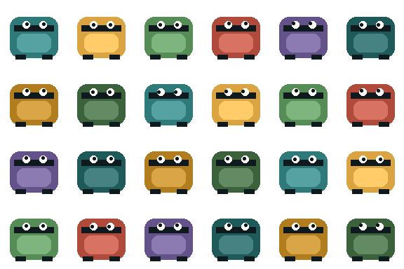

Godot 4 · GDScript · glTF
Godot 4 procedural asset pipeline
A valid project.godot plus main.tscn, a GDScript voxel builder that produces a deterministic 12×12 world at runtime, and an AssetExporter autoload that writes glTF when Godot is launched headless — exactly the path AI teams need for dataset captures.